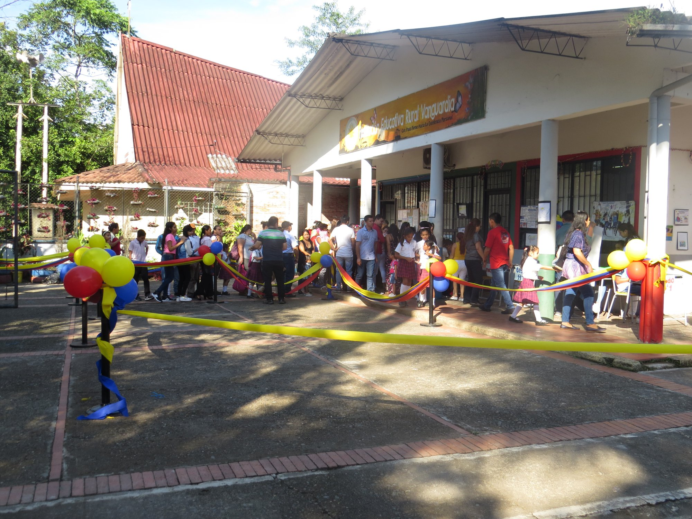

Misión
La Institución Educativa Rural Vanguardia busca la formación integral de los estudiantes, promoviendo el respeto por la diversidad cultural y el medio ambiente, así como el desarrollo de competencias académicas y socioemocionales.

La Institución Educativa Rural Vanguardia promueve la formación integral de sus estudiantes con principios éticos, ciudadanos y de respeto por el medio ambiente.
Seremos una institución reconocida por su excelencia académica, inclusión y compromiso con el desarrollo sostenible de la región y el país.
La Institución Educativa Rural Vanguardia busca la formación integral de los estudiantes, promoviendo el respeto por la diversidad cultural y el medio ambiente, así como el desarrollo de competencias académicas y socioemocionales.
En 2025, la Institución será un referente en la región por su calidad educativa, su enfoque en el desarrollo sostenible, y la inclusión social, contribuyendo al progreso de la comunidad.
